물류관리사-1교시 (2011-08-14 기출문제)
1과목: 물류관리론
1. 역물류(Reverse Logistics)에 해당하는 것을 모두 나열한 것은?
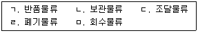
- ㄱ, ㄷ, ㄹ
- ㄱ, ㄹ, ㅁ
- ㄴ, ㄷ, ㅁ
- ㄴ, ㄹ, ㅁ
- ㄷ, ㄹ, ㅁ
(정답률: 83%)

2. 녹색물류(Green Logistics)는 기업의 지속가능 경영에 매우 중요한 요인이 되고 있다. 다음 중 녹색물류를 수행하기 위한 기업의 활동으로 적절하지 않은 것은?
- 과도한 단납기 및 소량납품의 물류조건을 개선한다.
- 수ㆍ배송의 유연성을 높이기 위해서 자차배송 시스템을 적극 활용한다.
- 수송포장의 합리화를 위해서 화주와 물류기업간의 협력을 강화한다.
- 트럭수송 위주에서 철도 등의 대량 화물수송 수단의 활용도를 높인다.
- 제품의 설계단계에서부터 포장표준화, 포장재료의 재활용을 고려한다.
(정답률: 80%)
3. 물류의 기본적 기능에 관한 설명으로 가장 거리가 먼 것은?
- 장소적 간격을 극복하여 준다.
- 시간의 불일치를 조절하여 준다.
- 물류는 운송에서 정보활동에 이르기까지 가격 조정기능과 관련되어 있다.
- 집하, 운송, 보관기능을 통해 재화의 품질을 조정한다.
- 생산과 소비의 수량 불일치를 조정하여 준다.
(정답률: 67%)
4. 물류활동에 관한 설명으로 옳지 않은 것은?
- 하역은 보관과 수송의 양단에 있는 물품의 취급을 말한다.
- 보관은 생산과 소비의 시간적 효용을 창출한다.
- 유통가공은 물품 자체의 기능을 변화시키고 부가가치를 부여한다.
- 물류관리는 물류활동에 대한 계획, 조정, 통제 활동이다.
- 수송은 국가물류비용 중에서 가장 큰 비중을 차지하는 영역이다.
(정답률: 37%)
5. 물류관리에 관한 설명으로 옳지 않은 것은?
- 물류효율화를 위한 제품설계, 공장입지선정, 생산계획 등에 관한 관리가 포함된다.
- 소유권이 이전된 이후의 물품은 물류관리활동의 대상에서 제외된다.
- 원자재 및 부품의 조달, 구매상품의 보관, 완제품 유통도 물류관리의 대상이다.
- 물류관리활동은 고객서비스 향상과 물류비용의 절감이라는 상반된 목표를 추구한다.
- 수송, 보관, 포장, 하역 등의 여러 기능을 종합적으로 고려하여야 한다.
(정답률: 70%)
6. 상물(商物) 분리의 효과로 옳지 않은 것은?
- 수주통합으로 배송차량의 적재율이 향상된다.
- 수송단계의 통합과 운임 할인이 가능하다.
- 하역의 기계화 및 창고 자동화 추진이 가능하다.
- 재고의 집중적 관리를 통해 재고의 편재 및 과부족 해소가 가능하다.
- 영업기능과 물류기능간의 공동책임의식이 강화된다.
(정답률: 64%)
7. 최근 물류환경의 여건 변화와 전망에 관한 설명으로 옳지 않은 것은?
- 물류센터의 기능은 단순 보관시설(Storage)에서 유통창고(Warehouse)로 전환되고 있다.
- 다품종 소량화, 전자상거래의 확산으로 유통배송단계가 점점 늘어나고, 고객맞춤형 물류서비스가 강조되고 있다.
- 제품기술의 발달, 소비자 요구의 다양화로 제품수명주기가 점차 단축되고 있다.
- 환경규제가 점차 강화됨에 따라 회수물류에 대한 관심이 증대되고 있다.
- 개별기업의 테두리 안에서 물류효율화를 위한 대응 노력에는 한계가 있다.
(정답률: 25%)
8. 물류의 영역에 관한 설명으로 옳은 것은?
- 폐기물류는 재활용과 더불어 차량과 전자제품 등의 리콜과 관련된다.
- 판매물류는 판매된 제품이나 상품 자체의 문제점과 관련된다.
- 생산물류는 제품의 파손 또는 기능 소멸 등과 관련된다.
- 조달물류는 물류의 시발점과 관련된다.
- 회수물류는 제품이 소비자에게 전달되는 과정과 관련된다.
(정답률: 55%)
9. 다음 용어에 관한 설명으로 옳은 것은?
- TQM(Total Quality Management) : 판매시점에서 정보가 전달되어 소매업체가 일일이 주문하지 않아도 자동으로 발주되는 시스템이다.
- OCT(Order Cycle Time) : 고객의 주문발주에서부터 제품을 인수하여 창고에 수령할 때까지 소요된 시간을 말한다.
- POS(Point of Sales) : 다자간 또는 제3자 네트워크로 알려진 부가가치 통신망을 말한다.
- DPS(Digital Picking System) : 상품의 포장에 태그를 부착하거나 인쇄하여 상품에 대한 정보를 저장한다.
- MRP(Material Requirements Planning) : 고객의 주문을 보다 정확하게 충족시키기 위하여 기업의 총체적 품질경영 노력을 지원하는 시스템이다.
(정답률: 58%)
10. 공급사슬관리(Supply Chain Management)의 특징으로 옳지 않은 것은?
- 수직적 통합(Vertical Integration)
- 단절없는 흐름(Seamless Flow)
- 협업(Collaboration)
- 정보의 공유(Information Sharing)
- 동기화(Synchronization)
(정답률: 71%)
11. 다음 중 채찍효과(Bullwhip Effect)가 발생하는 원인으로 보기에 가장 거리가 먼 것은?
- 부정확한 수요예측
- 일괄주문처리
- 정보의 가시성 확보
- 제품가격의 변동
- 과도한 통제에 따른 리드타임의 증가
(정답률: 알수없음)
12. 공급사슬관리(Supply Chain Management)를 실현하기 위한 방법으로 가장 거리가 먼 것은?
- 업무절차혁신(Business Process Reengineering)
- 공급자 재고관리(Vendor Managed Inventory)
- 효율적 고객대응(Efficient Consumer Response)
- 신속대응(Quick Response)
- 지속적 보충프로그램(Continuous Replenishment Programs)
(정답률: 34%)
13. 어떤 기업이 100억원을 들여 물류창고를 건설하였다. 물류창고의 내용연수는 20년이며, 감가상각은 정액상각방식으로 한다. 물류창고 건설 후 5년이 경과한 시점의 물류창고에 대한 연간 시설부담이자는 얼마인가? (단, 시중 연 이자율은 5%를 적용하고, 투자비용의 시간가치와 잔존가치는 고려하지 않는다.)
- 3억원
- 3억 2,500만원
- 3억 5,000만원
- 3억 7,500만원
- 4억원
(정답률: 55%)
14. 다음은 제품 A와 B를 취급하는 물류센터에서 총물류비의 비목별 구성과 비용배분을 위한 자료이다. 이 물류센터에서 제품 A의 물류비를 계산하면 얼마인가?
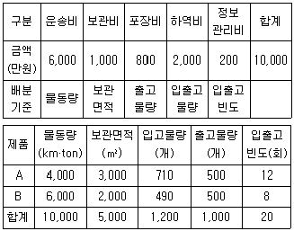
- 4,550만원
- 4,620만원
- 4,970만원
- 5,120만원
- 5,380만원
(정답률: 39%)
15. 물류비의 비목별 계산 과정이 올바르게 나열된 것은?
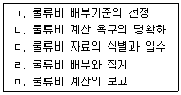
- ㄱ - ㄴ - ㄷ - ㄹ - ㅁ
- ㄱ - ㄷ - ㄴ - ㄹ - ㅁ
- ㄱ - ㄷ - ㄹ - ㄴ - ㅁ
- ㄴ - ㄱ - ㄹ - ㄷ - ㅁ
- ㄴ - ㄷ - ㄱ - ㄹ - ㅁ
(정답률: 40%)
16. 물류비의 분류에 관한 설명으로 옳지 않은 것은?
- 기능별 물류비는 운송비, 보관비, 포장비, 하역비 등으로 구분한다.
- 지급형태별 물류비는 자가 물류비와 위탁 물류비 등으로 구분한다.
- 세목별 물류비는 재료비, 노무비, 경비, 이자 등으로 구분한다.
- 관리항목별 물류비는 제품별, 지역별, 고객별 등으로 구분한다.
- 조업도별 물류비는 조달, 생산, 판매 물류비 등으로 구분한다.
(정답률: 40%)
17. 물류정보시스템의 구성 요소에 포함되지 않는 것은?
- 재고관리시스템
- 주문처리시스템
- 수ㆍ배송시스템
- 창고관리시스템
- 판매지원시스템
(정답률: 알수없음)
18. 화물 및 화물차량에 대한 위치를 실시간으로 추적ㆍ관리하여 각종 부가정보를 제공하는 시스템을 무엇이라고 하는가?
- KROIS
- PORT-MIS
- CVO
- TRAXON
- AIRCIS
(정답률: 59%)
19. 물류정보와 관련된 약어와 그 의미의 연결이 옳지 않은 것은?
- EDI - 전자문서교환
- VAN - 광범위하고 복합적인 부가가치 통신망
- LAN - 고속 원거리 통신망
- ISDN - 기존 전화망에서 한 차원 발전된 차세대 기간통신망
- WAN - 원격지를 통신회선으로 연결한 통신망
(정답률: 알수없음)
20. 표준 바코드에 관한 설명으로 옳지 않은 것은?
- EAN/UCC-8은 7자리의 회사 및 제품코드와 1자리의 체크코드로 구성되며 매우 작은 물품의 식별에 사용된다.
- EAN/UCC-13은 공급사슬에서 거래되는 일반 품목에 사용되며 소매점의 POS(Point Of Sales)에서 물품 인식의 기본구조가 된다.
- EAN/UCC-14는 박스, 파렛트, 컨테이너 등 동일 상품의 물류 단위를 인식하는데 사용된다.
- EAN/UCC-128은 제조일자, 유효기간, 뱃치번호 등을 표시할 수 있으며 외부 포장에는 사용할 수 없다.
- ITF-14는 주로 골판지 상자에 사용되는 국제표준물류바코드로써 생산공장, 물류센터, 유통센터 등의 입ㆍ출하시점에 판독된다.
(정답률: 50%)
21. 공급사슬관리의 솔루션은 SCP(Supply Chain Planning)와 SCE(Supply Chain Execution)로 구분할 수 있다. 다음 중 SCP 및 SCE에 관한 설명으로 옳지 않은 것은?
- SCP는 가변적인 수요에 대하여 균형 잡힌 공급을 유지할 수 있는 최적화된 계획을 구현하는 시스템이다.
- SCE는 공급사슬 내에 있는 상품의 물리적인 상태나 자재 관리, 그리고 관련된 모든 당사자들의 재원 정보 등을 관리하는 시스템이다.
- SCP는 ERP(Enterprise Resource Planning)로부터 계획을 위한 기준정보를 제공받아 통합계획을 수립한 후 지역별 개별계획을 수립하여 ERP쪽으로 전달한다.
- SCE의 주요 솔루션으로는 창고관리시스템(Warehouse Management System), 운송관리시스템(Transportation Management System) 등이 있다.
- SCE의 영역은 계절적 소비 패턴 등의 통계적기법을 이용한 수요예측을 포함하고 있다.
(정답률: 22%)
22. 다음에서 설명하고 있는 내용과 가장 관계가 깊은 것은?
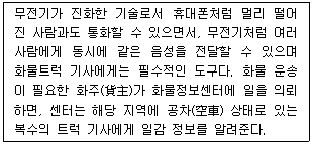
- ISDN(Integrated Service Digital Network)
- ITS(Intelligent Transport System)
- LBS(Location Based Service)
- TRS(Trunked Radio System)
- GIS-T(Geographical Information System for Transportation)
(정답률: 55%)
23. 고객관계관리(Customer Relationship Management)에 관한 설명으로 옳지 않은 것은?
- 마케팅 패러다임은 기존 우수고객의 유지 및 이탈 방지 중심에서 신규고객 획득과 제품 판매 중심으로 전환되고 있다.
- 고객관계관리는 단계별로 고객관계 형성, 고객관계 유지, 고객관계 강화로 구성된다.
- 우수고객을 어떻게 파악하고, 획득하며, 유지시켜 고객의 평생가치를 높일 수 있는가에 대한 분석이 필요하다.
- 고객관련 데이터를 어떻게 획득하고, 축적하며, 분석하고 서비스 할 것인가에 관한 고객 전략 수립과 인프라 구축에 대한 이해가 필요하다.
- 동일하지 않은 고객을 분류하여 각기 다른 부분에 속하는 고객에게 차별화된 제품과 서비스를 제공하여야 한다.
(정답률: 64%)
24. 포장(Packaging)에 관한 설명으로 옳지 않은 것은?
- 물품의 유통과정에 있어서 그 물품의 가치 및 상태를 보호하기 위해 적합한 재료 또는 용기 등으로 물품을 포장하는 방법이나 상태를 말한다.
- 물품정보의 전달 및 물품의 판매를 촉진함과 동시에 재료와 형태면에서 포장의 사회적 공익성과 함께 환경에 적합해야 한다.
- 화물의 이동성, 보호성을 높이는 등 물류프로세스 상에서 중요한 역할을 수행하고 있다.
- 국가물류비에서 차지하는 비율이 매우 높고, 생산과 마케팅을 연결하는 기능을 지니고 있다.
- 물류의 규격화, 표준화의 관점에서 중추적인 역할을 담당하고 있다.
(정답률: 59%)
25. 물류표준화에 관한 설명으로 옳지 않은 것은?
- 물동량의 흐름이 증대됨에 따라 물류의 일관성과 경제성을 확보하기 위해 필요하다.
- 단순화, 규격화, 전문화를 통해 물류활동에 공통의 기준을 부여하는 것이다.
- 국제환경변화에 대응하기 위해서는 국제표준화와 연계되는 물류표준화가 요구된다.
- 보관, 운송, 하역 등 기능별 최적화 입장에서 독립적인 효율성, 비용을 고려하여 구축하여야 한다.
- 유닛로드시스템의 구축을 위해서 물류활동간 접점에서의 표준화가 중요하다.
(정답률: 50%)
26. 분야별 물류합리화 방안으로 옳지 않은 것은?
- 포장분야 - 단계적 모듈화 추진
- 수송분야 - 수송차량ㆍ장비의 현대화 지원
- 보관분야 - 건축법에 의한 창고건물 신축 및 제한기준 강화
- 하역분야 - 하역의 기계화ㆍ자동화
- 정보분야 - 인터넷을 통한 물류정보의 수집 및 활용
(정답률: 60%)
27. 재고는 보존과정에서 훼손되거나 노후화됨으로써 제품 가치가 저하될 수 있다. 다음 중 재고위험비용(Inventory Risk Cost)의 요인에 해당되지 않는 것은?
- 진부화비용(Obsolescence Cost)
- 공공창고비용(Public Warehouse Cost)
- 손상비용(Damage Cost)
- 감모(減耗)비용(Shrinkage Cost)
- 재배치비용(Relocation Cost)
(정답률: 40%)
28. 수ㆍ배송에 있어 혼재(Consolidation)에 관한 설명으로 옳지 않은 것은?
- 수ㆍ배송비용을 감소시킬 수 있다.
- 여러 화주의 화물을 같이 수송하는 것이다.
- 리드타임을 줄일 수 있다.
- 적재율을 향상시킬 수 있다.
- 규모의 경제에 기반한다.
(정답률: 37%)
29. T-11(1100 mm × 1100 mm)과 T-12(1200 mm × 1000 mm) 파렛트에 모두 정합하는 포장모듈은?
- 500 mm × 400 mm
- 550 mm × 275 mm
- 550 mm × 366 mm
- 600 mm × 400 mm
- 600 mm × 500 mm
(정답률: 37%)
30. 수요예측기법은 크게 정성적 방법과 정량적방법으로 구분할 수 있다. 다음 중 정량적 수요예측기법에 해당되는 것은?
- 지수평활법
- 판매원의 예측
- 델파이법
- 시장조사
- 전문가 의견
(정답률: 40%)
31. 유통경로(Distribution Channel)에 관한 설명으로 옳지 않은 것은?
- 유통경로는 제품이나 서비스가 생산자에서 소비자에 이르기까지 거치게 되는 통로 또는 단계를 말한다.
- 유통경로는 생산자의 직영점과 같이 소유권의 이전 없이 판매활동만을 수행하는 형태도 있다.
- 유통경로는 탄력성이 있어서 다른 마케팅 믹스 요소와 마찬가지로 한 번 결정되어도 다른 유통경로로의 전환이 용이하다.
- 유통경로는 시간적, 장소적 효용뿐만 아니라 소유적, 형태적 효용도 창출한다.
- 유통경로에서 중간상은 교환과정의 촉진, 제품구색의 불일치 완화 등의 기능을 수행한다.
(정답률: 알수없음)
32. 린 생산(Lean Production)과 관련하여 공급사슬에서 제거해야 할 7가지 낭비유형에 해당되지 않는 것은?
- 수요 불균형에 의한 낭비
- 과잉생산의 낭비
- 재고로 인한 낭비
- 대기시간으로 인한 낭비
- 운반으로 인한 낭비
(정답률: 37%)
33. 제품생산에 요구되는 부품 등 자재를 필요한 시기에 필요한 수량만큼 조달하여 낭비적 요소를 근본적으로 제거하려는 시스템을 뜻하는 용어는?
- 컴퓨터통합관리시스템(CIM)
- 적시공급(생산)시스템(JIT)
- 전사적품질경영시스템(TQM)
- 경영정보시스템(MIS)
- 유연생산시스템(FMS)
(정답률: 64%)
34. 녹색물류(Green Logistics)를 실현하기 위한 다음 활동 중 추구하는 목표가 다른 것은?
- 차량의 브레이크 방음장치 설치
- 불화염화탄소(CFCs) 대체물질의 사용
- 냉각 및 냉방시스템의 탈루검사 시행
- 배출 저감 연료첨가물의 사용
- 디젤연료를 사용하는 경우, 저유황분 연료의 사용
(정답률: 55%)
35. 국토해양부 '국가물류기본계획 제2차 수정계획(2011~2020)'의 5대 추진전략에 해당되지 않는 것은?
- 육해공 통합물류체계 구축을 통해 물류효율화 구현
- 고품질 물류서비스 제공을 위한 소프트 인프라 확보
- 녹색물류체계와 물류보안 강화로 선진물류체계 구현
- 글로벌 물류시장진출을 위한 물류산업 경쟁력 강화
- 물류합리화를 위한 하드웨어 물류 인프라 구축
(정답률: 알수없음)
36. 제4자 물류에 관한 설명으로 옳지 않은 것은?
- 물류 아웃소싱이 활성화되면서 제3자 물류가 더욱 발전된 개념이다.
- 상호 보완관계에 있는 IT 업체, 운송업체 등 타 물류업체와 연합하여 서비스를 제공한다.
- 물류활동 업무프로세스의 혁신을 우선적으로 하지만 실질적인 물류효율화를 달성하기는 어렵다.
- 제4자 물류 서비스 제공자는 아웃소싱과 인소싱의 장점을 통합한 형태로 최대한의 경영성과를 얻기 위한 조직이다.
- 제4자 물류 서비스 제공자는 공급사슬 전체를 관리하고 운영하며, 다양한 기업을 파트너로 참여시킨다.
(정답률: 64%)
37. 대형마트보다 작고 동네슈퍼마켓보다 큰 300 ~ 3,000 m2 규모 정도의 유통매장으로 개인점포를 제외한 대기업 계열 슈퍼마켓을 지칭하는 것은?
- 파워센터(Power Center)
- 슈퍼센터(Super Center)
- 하이퍼마켓(Hyper Market)
- 기업형슈퍼마켓(Super Super Market)
- 양판점(General Merchandise Store)
(정답률: 알수없음)
38. BSC(Balanced Score Card)는 기업의 성과 중 재무적 관점, 고객관점, 비즈니스 프로세스 관점, 학습 및 성장의 관점에서 종합적이고 균형적으로 측정하는 성과평가시스템이다. 다음 중 학습 및 성장 관점의 측정항목에 해당하는 것은?
- 내ㆍ외부 물류프로세스의 통합
- 전사적 물류통합조직의 운영 정도
- 운송화물추적(Tracking) 서비스
- 업무처리절차의 신속성
- 리드타임 단축
(정답률: 28%)
39. 우리나라는 물류보안을 강화하기 위하여 2009년 3월부터 종합인증우수업체(Authorized Economic Operator) 제도를 시행하고 있다. 종합인증우수업 체제도에 관한 설명으로 옳지 않은 것은?
- 관세행정상의 강제적 규정으로 반드시 참여하여야 하는 프로그램이다.
- 민ㆍ관협력 바탕의 관세행정 위험관리의 새로운 정책적 수단이다.
- 미국, EU, 중국, 일본 등이 AEO 제도를 시행하고 있다.
- AEO 상호인정체결국간 수입통관 시 서류제출 감소, 검사비율 축소, 통관 신속화 등의 혜택을 받을 수 있다.
- 수출입과 관련하여 물품의 생산, 운송, 보관 등 수출입 공급망에 포함된 모든 당사자가 참여할 수 있다.
(정답률: 46%)
40. MRO(Maintenance, Repair & Operation)사업은 기업의 각종 용품의 구입 및 관리를 전문업체에 위탁함으로써 직접 구매하고 관리하는데 따른 비효율성과 인적낭비를 제거하려는 것이다. 다음 중 전자상거래를 이용한 MRO 사업의 성공 요건으로 가장 거리가 먼 것은?
- 공급업체별 개별화된 데이터베이스의 구축
- 시스템의 확장성 및 통합성 확보
- 비계획 구매에 대한 효과적인 대응
- 철저한 공급업체의 관리
- MRO 자재에 대한 토탈 서비스의 제공
(정답률: 43%)
2과목: 화물수송론
41. 운송에 관한 설명으로 옳지 않은 것은?
- 운송의 3요소에는 Mode(운송수단), Link(운송경로), Node(운송상 연결점)가 있다.
- 일반적으로 지리적 관점에서 국내운송과 국제운송으로 구분된다.
- 운송수단의 속도가 빠를수록 운송 빈도수가 높아져 재고ㆍ보관비가 증가한다.
- 운송시장에서 물류보안 및 환경 관련 규제가 강화되는 추세이다.
- 운송은 지역이나 거리를 극복하여 상품 가격의 균일화에 기여한다.
(정답률: 40%)
42. 화물자동차 운송사업을 운영하는데 발생하는 비용 중 변동비에 해당되지 않는 것은?
- 수리비(修理費)
- 잡유비(雜油費)
- 일반관리비
- 도로통행료
- 연료비
(정답률: 28%)
43. 화물의 배송루트 및 일정계획을 수립하는 원칙으로 옳지 않은 것은?
- 가장 근접해 있는 지역의 물량을 함께 싣는다.
- 배송날짜가 다른 경우에는 경유지를 엄격하게 구분한다.
- 운행경로는 차고에서 가장 먼 지역부터 만들어 간다.
- 가장 효율적인 경로는 가능한 한 소형차량을 이용하여 만든다.
- 루트배송에서 제외된 수요지는 별도의 차량을 이용한다.
(정답률: 알수없음)
44. 항공운송용 단위탑재용기(ULD: Unit Load Device)와 관련된 설명으로 옳지 않은 것은?
- 종류에는 파렛트, 컨테이너, 이글루, GOH(Garment on Hanger) 등이 있다.
- 기종별 규격의 비표준화로 ULD의 기종 간 호환성이 낮다.
- 지상조업시간, 하역시간을 단축할 수 있다.
- 운송화물의 안전성이 제고된다.
- 초기 투자비용이 적게 든다.
(정답률: 47%)
45. 항공운송과 관련된 바르샤바조약과 헤이그의 정서에서 규정하고 있는 이의신청기간에 대한 내용이다. (ㄱ), (ㄴ)에 알맞은 것은?
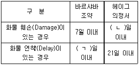
- ㄱ: 7, ㄴ: 14
- ㄱ: 14, ㄴ: 14
- ㄱ: 7, ㄴ: 21
- ㄱ: 14, ㄴ: 21
- ㄱ: 7, ㄴ: 28
(정답률: 16%)
46. 우리나라 철도운송의 특징에 관한 설명으로 옳은 것은?
- 철도화물 운송 시 필요한 화차는 형태에 따라 유개화차, 무개화차 등이 있다.
- 2009년 기준, 국내 철도화물 운송실적은 화물자동차 운송실적보다 많다.
- 우리나라 철도노선의 궤간 폭은 1,524mm인 광궤를 이용하고 있다.
- 철도운송의 분담율을 높이기 위해 Block Train과 Double Stack Train을 운행하고 있다.
- 철도운송은 대량화물운송 및 문전운송 측면에서 다른 운송수단보다 유리하다.
(정답률: 알수없음)
47. 전용특장차의 특성으로 옳지 않은 것은?
- 귀로시 화물의 확보가 용이하다.
- 차량의 가격이 높은 편이다.
- 화물의 포장비를 절감할 수 있다.
- 화물운송의 안전도를 향상시킨다.
- 소량화물 운송에는 비효율적이다.
(정답률: 알수없음)
48. 정기선운송에 필요한 서류에 관한 설명으로 옳지 않은 것은?
- 수화인수취증(B/N) : 선사 또는 대리점이 수화인으로부터 선하증권을 받아 대조 후, 본선이나 터미널에 화물인도를 지시하는 서류
- 기기수도증(E/R) : 육상운송회사가 선박회사로부터 기기류를 넘겨받는 것을 증명하는 서류
- 본선적부도(S/P) : 본선 내의 컨테이너 적재위치를 나타내는 도표
- 부두수취증(D/R) : 선사가 화주로부터 화물을 수취한 때에 화물의 상태를 증명하는 서류
- 선적지시서(S/O) : 선사 또는 그 대리점이 화주에게 교부하는 선적승낙서
(정답률: 알수없음)
49. 우리나라 “해운법”에서는 대량화물의 화주나 대량화물의 화주가 사실상 소유하거나 지배하는 법인이 그 대량화물을 운송하기 위하여 해상화물운송사업의 등록을 신청한 경우, 미리 국내 해운산업에 미치는 영향 등에 대하여 관련 업계, 학계, 해운전문가 등으로 구성된 정책자문위원회의 의견을 들어 등록 여부를 결정하여야 한다고 규정하고 있다. 이 대량화물에 해당되는 것을 모두 고른 것은?
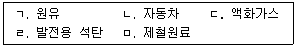
- ㄱ, ㄴ, ㅁ
- ㄱ, ㄷ, ㅁ
- ㄱ, ㄴ, ㄹ, ㅁ
- ㄱ, ㄷ, ㄹ, ㅁ
- ㄱ, ㄴ, ㄷ, ㄹ, ㅁ
(정답률: 알수없음)
50. 2007년 12월 28일 공정거래위원위가 승인한 “택배 표준약관(제10026호)”의 내용으로 옳지 않은 것은?
- 손해배상한도액은 고객이 운송장에 운송물의 가액을 기재하지 아니한 경우에 한하여 적용되며, 사업자는 손해배상한도액을 미리 이 약관의 별표로 제시하고 운송장에 기재한다.
- 운송물의 멸실, 훼손 또는 연착이 사업자 또는 그의 사용인의 고의 또는 중대한 과실로 인하여 발생한 때에는 사업자는 모든 손해를 배상한다.
- 사업자는 고객이 운송장에 필요한 사항을 기재하지 아니한 경우에는 운송물의 수탁을 거절할 수 없다.
- 사업자는 고객의 이익을 해치지 않는 범위 내에서 수탁한 운송물을 다른 운송사업자와 협정을 체결하여 공동으로 운송하거나 다른 운송사업자의 운송수단을 이용하여 운송할 수있다.
- 운송물의 일부 멸실 또는 훼손에 대한 사업자의 손해배상책임은 수하인이 운송물을 수령한 날로부터 14일 이내에 그 일부 멸실 또는 훼손에 대한 사실을 사업자에게 통지를 발송하지 아니하면 소멸한다.
(정답률: 알수없음)
51. 다음 중 도로운송에 관한 설명으로 옳은 것을 모두 고른 것은?
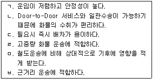
- ㄱ, ㄴ, ㄹ
- ㄴ, ㄷ, ㄹ
- ㄴ, ㄷ, ㅂ
- ㄷ, ㄹ, ㅂ
- ㄹ, ㅁ, ㅂ
(정답률: 40%)
52. 다음에서 설명하는 항공운임요율은 무엇인가?
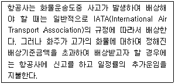
- Valuation Charge
- Bulk Unitization Charge
- Commodity Classification Rate
- Specific Commodity Rate
- General Cargo Rate
(정답률: 46%)
53. 컨테이너 화물에 관한 설명으로 옳지 않은 것은?
- FCL은 하나의 컨테이너에 만재되어 운송되는 화물을 의미한다.
- 컨테이너 하역시스템으로는 스트래들 캐리어방식, 트랜스테이너 방식 등이 있다.
- Feeder Charge는 FCL이 CY(off-dock CY 포함)에 반입되는 순간부터 반출될 때까지의 모든 비용을 말한다.
- CFS 또는 CY로부터 화물 또는 컨테이너를 무료장치기간(Free Time) 내에 반출하지 않으면 보관료(Storage Charge)를 징수한다.
- 20ft 컨테이너 1개를 1TEU라 하며, TEU를 컨테이너 물동량 산출 단위로 이용한다.
(정답률: 알수없음)
54. 아래 설명에 해당하는 열차서비스 형태는?
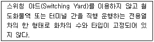
- Shuttle Train
- Single-Wagon Train
- Y-Shuttle Train
- Liner Train
- Block Train
(정답률: 34%)
55. 항공화물운송의 특성에 관한 설명으로 옳지 않은 것은?
- 타 운송수단에 비해 운임이 비싸다.
- 포장비가 저렴하고, 화물 손상율이 낮다.
- 화물의 수취가 불편하고, 공항에서 문전까지 집배송이 필요하다.
- 운송 요금은 화물 부피를 기준으로 한다.
- 항공운송에 적합한 품목은 긴급 화물, 일시적 유행상품, 투기상품 등 납기가 임박한 제품들이다.
(정답률: 알수없음)
56. 해상위험(Maritime Perils)의 종류를 해상고유의 위험(Perils of the Seas)과 해상위험(Perils on the Seas) 등으로 분류할 때 해상위험(Perils on the Seas)에 해당되지 않는 것은?
- 화재
- 충돌
- 투하
- 해적
- 선원의 악행
(정답률: 30%)
57. 프레이트 포워더(Freight Forwarder)의 기능 및 업무에 관한 설명으로 옳지 않은 것은?
- 프레이트 포워더는 운송과 관련된 법적 책임 주체이다.
- 물류에 관한 전문지식을 지니고 포장, 보관, 운송 등의 업무를 대행한다.
- 자체 운송 수단을 보유하지 않지만 집화, 분배, 혼재 등의 업무를 수행하는 운송의 주체자로서의 기능을 수행한다.
- 화주를 대신하여 적하보험 수배와 관련된 업무를 수행할 수 없다.
- 화주의 대리인으로서 적절한 운송수단을 선택하여 운송에 따르는 제반 업무를 처리해 주는 전통적인 운송주선 기능을 담당한다.
(정답률: 42%)
58. 항만 내 컨테이너 터미널 시설과 관계 없는 것은?
- 안벽(Berth)
- 에이프론(Apron)
- 마샬링 야드(Marshalling Yard)
- 컨테이너 야드(Container Yard)
- ODCY(Off Dock Container Yard)
(정답률: 16%)
59. 공동수배송에 관한 설명으로 옳은 것을 모두 고른 것은?
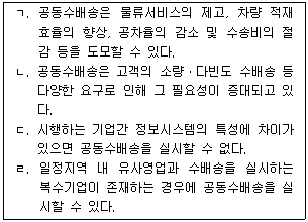
- ㄱ, ㄴ, ㄷ
- ㄱ, ㄴ, ㄹ
- ㄱ, ㄷ, ㄹ
- ㄴ, ㄷ, ㄹ
- ㄱ, ㄴ, ㄷ, ㄹ
(정답률: 37%)
60. 수요지, 공급지, 수요량 등이 다음과 같을 때, 최소비용법을 이용하여 산출한 총운송비용은?
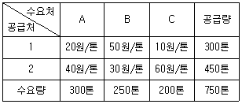
- 18,500원
- 19,000원
- 19,500원
- 20,000원
- 20,500원
(정답률: 알수없음)
61. A기업의 제조공장에서 판매지까지 거리는 200km이며, 운송량은 10톤이다. 운송조건이 아래와 같을 때 옳지 않은 것은?
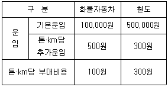
- 철도보다 화물자동차를 이용하는 것이 총운송비가 더 저렴하다.
- 철도 이용 시 추가운임과 부대비용은 같다.
- 화물자동차 이용 시 총운송비 중 추가운임이 가장 큰 비중을 차지한다.
- 철도 이용 시 총운송비 중 기본운임이 가장 작은 비중을 차지한다.
- 추가운임은 철도보다 화물자동차를 이용한 경우 적게 소요된다.
(정답률: 20%)
62. 다음 네트워크에서 각 운송로의 숫자는 각 운송로에 대한 최대 운송 용량(톤)을 나타낸다. 출발지 S에서 목적지 F로 최대로 운송할 수 있는 운송량은?
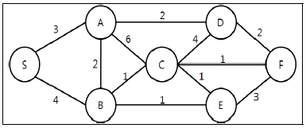
- 4톤
- 5톤
- 6톤
- 7톤
- 8톤
(정답률: 알수없음)
63. 다음이 설명하는 파렛트 풀 시스템의 운영방식은?
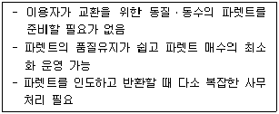
- 리스-렌탈 방식
- 교환 방식
- 대차결제 방식
- 기업단위 방식
- 업계단위 방식
(정답률: 37%)
64. 컨테이너 한 개를 채울 수 없는 소량화물(LCL 화물)을 인수, 인도하고 보관하거나 컨테이너에 적입(Stuffing) 또는 적출(Unstuffing, Devanning)작업을 하는 장소는?
- 컨테이너 야드(Container Yard)
- Container Transit Station
- CFS(Container Freight Station)
- 에이프론(Apron)
- 보세창고
(정답률: 알수없음)
65. 물류거점시설에 관한 설명으로 옳지 않은 것은?
- ICD(Inland Container Depot)는 내륙에 설치된 통관기지로서 수출입화물의 통관, 컨테이너의 보관, 철도연계운송 및 하역, 포장 등의 기능을 수행하고 있다.
- 철도 CY(Container Yard)는 철도운송과 관련된 화물처리시설로서 컨테이너를 효율적으로 배치, 회수, 보관하기 위하여 운영되고 있다.
- 국내 복합물류터미널은 군포, 양산 등에서 운영하고 있다.
- 일반물류터미널에는 화물취급장, 보관시설, 관리용건물, 주차장 등의 시설이 입지한다.
- 물류터미널의 범주에 속하지 않는 집배송센터 및 공동집배송단지는 복합물류터미널 기능의 강화로 그 필요성이 점차 약화되고 있다.
(정답률: 알수없음)
66. 저탄소 녹색경제 실현을 위해 추진 중인 도로 중심의 운송체계에서 철도 및 연안운송으로의 수송수단 전환과 관련된 것은?
- TMS(Transportation Management System)
- ITS(Intelligent Transport System)
- 통합물류서비스(Integrated Logistics Service)
- Modal Shift
- VMS(Vanning Management System)
(정답률: 알수없음)
67. 수송수요 분석모형의 화물발생량 예측단계에서 사용하는 기법이 아닌 것은?
- 통행교차 모형(Trip-interchange Model)
- 회귀분석법(Regression Model)
- 원단위법(Trip Rate Method)
- 카테고리분석법(Category Method)
- 성장률법(Growth Rate Method)
(정답률: 20%)
68. 다음의 빈칸에 들어갈 수배송시스템의 설계 순서로 옳은 것은?
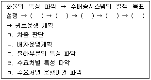
- ㄱ, ㄴ, ㄷ, ㄹ, ㅁ
- ㄴ, ㄷ, ㄹ, ㅁ, ㄱ
- ㄷ, ㄹ, ㅁ, ㄱ, ㄴ
- ㄹ, ㅁ, ㄱ, ㄴ, ㄷ
- ㅁ, ㄱ, ㄴ, ㄷ, ㄹ
(정답률: 알수없음)
69. 2.5톤 트럭을 이용하여 화물자동차운송사업을 영위하는 어느 회사의 2010년도 화물자동차 운행실적이 다음과 같을 경우, 적재율( ㄱ ), 실차율( ㄴ ), 가동율( ㄷ )을 바르게 나타낸 것은?
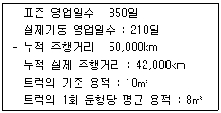
- ㄱ: 60%, ㄴ: 80%, ㄷ: 84%
- ㄱ: 84%, ㄴ: 80%, ㄷ: 60%
- ㄱ: 60%, ㄴ: 84%, ㄷ: 80%
- ㄱ: 80%, ㄴ: 60%, ㄷ: 84%
- ㄱ: 80%, ㄴ: 84%, ㄷ: 60%
(정답률: 알수없음)
70. 수배송시스템을 합리적으로 설계하기 위한 요건과 분석기법에 관한 설명으로 옳지 않은 것은?
- 모든 방문처를 경유해야 하는 차량수를 최소로 하면서 동시에 차량의 총 수송거리를 최소화하는 기법을 VSP(Vehicle Schedule Program)라 한다.
- 루트배송법은 다수의 소비자에게 소량 배송하기에 적합한 시스템으로 비교적 광범위한 지역을 대상으로 한다.
- 수배송시스템 설계 시 배송범위, 운송계획 등을 고려하여야 효율성을 높일 수 있다.
- SWEEP법, TSP(Travelling Salesman Program)법 등이 포함되는 변동다이어그램은 운송수단, 배송량 등을 고려하여 경제적인 수배송 경로를 설정하는 방식이다.
- 고정다이어그램은 과거 통계치에 의존하여 배송스케쥴을 설정하고, 적시배달을 중시하는 배송시스템으로 배송범위가 협소하고 빈도가 많은 경우에 유리하다.
(정답률: 알수없음)
71. 물류네트워크 설계에 관한 설명으로 옳지 않은 것은?
- 물류시설의 수, 크기, 위치 등의 결정을 포함한다.
- 고객 서비스 수준을 가장 먼저 설정해야 한다.
- 다양한 대안 중 정해진 서비스 수준을 충족하면서 재고유지비용, 설비비용, 수송비용 등 총 비용이 최소인 대안을 선정한다.
- 물류시설의 입지와 운송은 분리하여 계획을 수립한다.
- 수요규모 등 시장환경이 크게 변하는 경우 물류 네트워크를 재설계함으로서 비용을 절감할 수 있다.
(정답률: 40%)
72. 다음과 같은 네트워크에서 노드 S로부터 다른 모든 노드에 원유를 공급하는 송유관 물류네트워크를 구축하고자 한다. 모든 노드들에 원유를 공급할 수 있는 가장 짧은 길이의 송유관 물류네트워크를 구축하고자 할 때, 송유관의 총길이는 얼마인가? (단, 네트워크상의 숫자는 두 노드상의 거리로 km단위를 의미한다.)
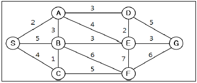
- 17km
- 19km
- 21km
- 23km
- 25km
(정답률: 20%)
73. 다음과 같은 조건 하에서 화물자동차가 철도와 비교하여 경쟁우위를 확보할 수 있는 경제적 효용거리는 얼마인가?
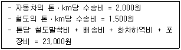
- 30.75km
- 32.25km
- 34.00km
- 36.67km
- 46.00km
(정답률: 37%)
74. 부정기선 운임에 대한 설명으로 옳지 않은 것은?
- Spot 운임(Spot Rate) : 계약 직후 아주 짧은 기간 내에 선적이 개시될 수 있는 상황에서 지불되는 운임
- 선물운임(Forward Rate) : 용선계약으로부터 실제 적재시기까지 오랜 기간이 있는 조건의 운임으로 선주와 하주는 장래 시황을 예측하여 결정하는 운임
- 일대용선운임(Daily Charter Freight) : 본선이 지정선적항에서 화물을 적재한 날로부터 기산하여 지정양륙항까지 운송한 후 화물 인도 완료시점까지의 1일(24시간)당 용선요율을 정하여 부과하는 운임
- 장기계약운임(Long Term Contract Freight) : 반복되는 항해에 의하여 화물을 운송하는 경우에 항해 수에 따라 기간이 약정되어 있는 운임
- 선복운임(Lump Sum Freight) : 본선의 선복을 단위로 하여 포괄적으로 정해지는 운임
(정답률: 20%)
75. 다음의 파렛트 규격 중, 한국산업표준(KS T 2033)에서 정하고 있는 "아시아 일관수송용 평파렛트"의 크기에 해당되는 것을 모두 고른 것은?
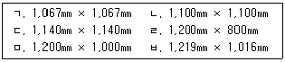
- ㄱ, ㄴ, ㄷ
- ㄴ, ㅁ
- ㄹ, ㅁ
- ㄴ, ㄹ, ㅁ
- ㄹ, ㅁ, ㅂ
(정답률: 알수없음)
76. FIATA(International Federation of Freight Forwarder Association) 복합운송증권(Multimodal Transport Document)에 관한 설명으로 옳지 않은 것은?
- 프레이트 포워더(Freight Forwarder)는 화주의 단독위험으로 화물을 보관할 수 있다.
- 프레이트 포워더가 인도지연으로 인한 손해, 화물의 멸실, 손상 이외의 결과적 멸실 또는 손상에 대해 책임을 져야 할 경우, 프레이트 포워더의 책임한도는 본 FBL(Forwarder's B/L)에 의거한 복합운송계약 운임의 2배 상당액을 초과하지 않는다.
- FBL에 따르면, 화물의 손상, 멸실 등의 경우, 프레이트 포워더는 무과실을 입증하지 못하는 한 배상책임을 면할 수 없다.
- 해상운송이나 내수로운송이 포함되지 않은 국제복합운송의 경우, 프레이트 포워더의 책임은 멸실 또는 손상된 화물의 총중량 1kg당 8.33SDR(Special Drawing Rights)을 초과하지 않는 금액으로 제한된다.
- 프레이트 포워더의 총책임은 화물의 전손에 대한 책임한도를 초과한다.
(정답률: 40%)
77. 물류단지에 관한 설명으로 옳지 않은 것은?
- 물류단지는 물류터미널ㆍ공동집배송단지ㆍ도소매단지ㆍ농수산물도매시장 등의 '물류시설'과 정보ㆍ금융ㆍ입주자편의시설 등의 '지원시설'을 집단적으로 설치하기 위한 일단의 토지(건물)이다.
- 유통구조의 개선과 물류비 절감효과의 저하 및 교통량 증가 문제를 해소하기 위해 도입되었다.
- 물류단지는 환적, 집배송, 보관, 조립ㆍ가공, 컨테이너처리, 통관 등 물류기능을 수행한다.
- 물류단지는 판매, 전시, 포장, 기획 등 상류기능은 수행하지 않는다.
- 물류단지의 입지는 항만ㆍ공단ㆍ대도시 주변 등 물동량이나 물류시설의 이용 수요가 많은 지역을 대상으로 한다.
(정답률: 알수없음)
78. 다음에서 설명하는 국제복합운송경로는 무엇인가?
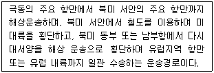
- CLB(Canadian Land Bridge)
- ALB(American Land Bridge)
- MLB(Mini Land Bridge)
- SLB(Siberian Land Bridge)
- IPI(Interior Point Intermodal)
(정답률: 알수없음)
79. 다음은 항공화물의 운송절차 중 일부이다. 수출 운송절차의 순서로 옳은 것은?
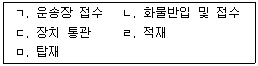
- ㄱ - ㄴ - ㄷ - ㄹ - ㅁ
- ㄱ - ㄴ - ㄷ - ㅁ - ㄹ
- ㄱ - ㄴ - ㄹ - ㄷ - ㅁ
- ㄴ - ㄱ - ㄷ - ㄹ - ㅁ
- ㄴ - ㄱ - ㄹ - ㄷ - ㅁ
(정답률: 20%)
80. 운송관련 국제기구에 관한 설명으로 옳지 않은 것은?
- 국제해운연맹(ISF) : 선주들의 귄익보호와 선주들에 대한 자문을 목적으로 각국의 선주협회들이 1919년 결성한 국제민간기구이다.
- 국제해법회(CMI) : UN경제사회이사회 산하의 경제위원회 중 하나이며, 아시아횡단 철도망, 아시아횡단 고속도로망 등을 주요추진사업으로 하고 있다.
- 국제선급협회연합회(IACS) : 각국 선급협회의 공통목적을 달성하고자 상호 협력하고 여타 국제단체와의 협의를 위해 1968년에 결성되었다.
- 국제해사기구(IMO) : 국제적 해사안전 및 해상오염 방지대책의 수립, 정부간 해운관련 차별조치의 철폐 등을 설립 목적으로 한다.
- 국제해운회의소(ICS) : 각국의 선주협회들이 선주들의 권익옹호 및 상호협조를 목적으로 1921년 런던에서 설립된 국제민간기구이다.
(정답률: 알수없음)
3과목: 국제물류론
81. 국제물류의 특성에 관한 일반적인 설명으로 옳지 않은 것은?
- 국가간 장거리 운송서비스가 이루어지고 화물이 관세선을 통과한다.
- 주문부터 제품 수령까지의 리드타임이 국내물류보다 상대적으로 길다.
- 총 물류비 중 국제운송비의 비중이 가장 크다.
- 선하증권, 신용장, 통관서류와 같은 취급서류가 많아 국내물류보다 복잡하다.
- 국내물류보다 운송모드의 수가 상대적으로 적어 관리가 용이하다.
(정답률: 34%)
82. 국제물류계획의 수립에 있어서 일반적인 전략이 아닌 것은?
- 물류시스템의 설계는 Trade-off 분석을 통한 총비용 개념으로 접근한다.
- 물류 표준화와 공동화를 통하여 비용절감을 추구한다.
- 물류아웃소싱을 지양하고 자가물류체계를 확대한다.
- 단위운송비를 낮추기 위하여 수송단위의 대형화를 추구한다.
- JIT물류는 고객서비스 수준을 고려하여 선택적으로 사용한다.
(정답률: 46%)
83. 국제물류활동의 위험 및 불확실성을 증가시키는 요인이 아닌 것은?
- 안전재고량의 확보
- 글로벌 공급사슬의 리드타임 증가
- 복잡한 통관절차 및 수출입 프로세스
- 각국의 법규 및 관습의 차이
- 전쟁이나 테러
(정답률: 30%)
84. 미국에 소재하고 있는 대형백화점인 A회사는 한국에서 백화점 자체 브랜드의 의류를 여러 봉제업자들로부터 OEM방식으로 가공하여 취합한 후 일괄하여 컨테이너로 수입한다. 한국의 국제물류주선업체인 B회사가 위 물품의 운송을 위탁받았다고 할 때 B회사가 취할 수 있는 적합한 운송형태는?
- CY→CY
- CFS→CY
- CFS→CFS
- ODCY→ODCY
- CY→CFS
(정답률: 알수없음)
85. 미국은 9.11사건 이후 미국으로 들어오는 화물에 관한 사전 적하목록 정보만으로는 충분한 보안 확보가 어렵다고 판단하여 외국항에서 선박에 화물이 적재되기 전에 미국으로 향하는 화물에 관한 자료의 적절한 보안요소를 포함한 추가적인 정보를 전자적으로 전송할 것을 요구하고 있다. 이 제도는?
- 24-hour rule
- Trade act of 2002
- C-TPAT
- 10+2 rule
- Container Security Initiative
(정답률: 30%)
86. 현재 국제물류환경의 변화로 볼 수 없는 것은?
- 지역주의 확산에 따른 세계경제의 블록화
- 운송산업 규제강화를 통한 경쟁 촉진
- 지속가능한 친환경 녹색물류의 확산
- 물류보안규제 강화
- 기업경영의 글로벌화 확산
(정답률: 알수없음)
87. 수입화물이 선하증권보다 먼저 목적항에 도착하여 통관이 지연되어 화물의 변질, 보관료 증가, 판매기회의 상실 등의 부담이 발생할 우려가 있을 때 이러한 불편을 해소하기 위하여 수화인이 사용할 수 있는 서류는?
- L/I(Letter of Indemnity)
- D/O(Delivery Order)
- T/R(Trust Receipt)
- T/S(Tally Sheet)
- L/G(Letter of Guarantee)
(정답률: 알수없음)
88. 다음은 Incoterms® 2010의 내용이다. ( ㄱ ), ( ㄴ ), ( ㄷ )을 올바르게 나열한 것은?
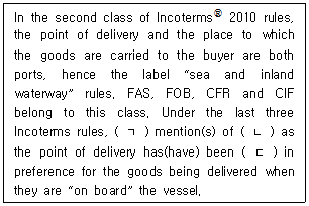
- ㄱ: any, ㄴ: the ship's rail, ㄷ: omitted
- ㄱ: all, ㄴ: the ship's rail, ㄷ: omitted
- ㄱ: all, ㄴ: the ship's deck, ㄷ: included
- ㄱ: any, ㄴ: the ship's deck, ㄷ: included
- ㄱ: any, ㄴ: the ship's deck, ㄷ: omitted
(정답률: 알수없음)
89. 다음은 Incoterms® 2010의 내용이다. ( ) 안에 알맞은 것은?
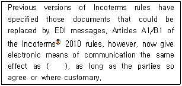
- EDI
- fax
- paper communication
- oral communication
(정답률: 20%)
90. 다음은 해운회사의 선박운항 개요이다. 이에 관한 설명으로 옳지 않은 것은?
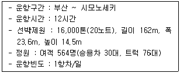
- 카페리 서비스를 제공하는 선박이다.
- 항해용선계약서가 작성된다.
- 운항 패턴이 정기적이다.
- 사전에 공표된 운임이 적용된다.
- 1시간에 20해리의 속도로 운항하는 선박이다.
(정답률: 알수없음)
91. ICD(Inland Container Depot)에 관한 설명으로 옳지 않은 것은?
- ICD의 대부분은 상가지역이나 주택 밀집지역에 인접해 있어서 화주의 인근지역에서 화물의 처리 및 통관 등이 이루어져 화물분배의 경제성이 제고된다.
- 내륙에 도착한 공컨테이너를 항만터미널까지 운송할 필요가 없어 교통량 감소 및 운송경비의 절감효과를 얻을 수 있다.
- 항만과 동일하게 CY 및 CFS의 기능을 수행하며 입주업체가 보세창고를 직접 운영한다.
- 컨테이너 운송과 관련된 선사, 복합운송인, 화주 등 관련 업체들간 정보시스템 구축이 용이하여 신속ㆍ정확ㆍ안전한 서비스가 제공될 수 있다.
- 철도와 도로의 연계, 환적 등 운송수단 및 운송장비의 효율적 활용으로 연계운송체계를 통한 일관운송이 가능하게 된다.
(정답률: 알수없음)
92. 항해용선계약과 관련된 것을 모두 고른 것은?
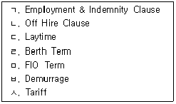
- ㄱ, ㄷ, ㅅ
- ㄴ, ㄹ, ㅅ
- ㄱ, ㅁ, ㅂ
- ㄷ, ㅁ, ㅂ
- ㄱ, ㄴ, ㅅ
(정답률: 알수없음)
93. 해상운송에서 사용되는 C/P(Charter Party)라는 용어와 밀접한 관련이 있는 것은?
- Shipping conference
- Tramper
- Tariff rate
- Liner vessel
- Liner term
(정답률: 25%)
94. 1972년 국제연합과 국제해사기구가 컨테이너의 취급, 적취 및 운송에 있어서 컨테이너의 구조상 안전요건을 국제적으로 공통화하기 위하여 채택한 것은?
- TIR협약
- CSI협정
- CSC협약
- ITI협약
- CCC협약
(정답률: 알수없음)
95. Hague Rules에 관한 설명으로 옳지 않은 것은?
- 운송인은 본선 선적개시시부터 출항시까지 선박의 내항성(Seaworthiness)에 대한 주의를 게을리하지 말아야 할 의무가 있다.
- 항해 또는 선박 자체의 취급에 대하여 선장이나 선원의 과실인 항해과실에 대하여는 운송인이 책임진다.
- 선박의 항해에 필요한 승조원을 배치하고 선박의 의장 및 필수품을 보급할 의무가 운송인에게 있다.
- 화물이 운송될 창내, 냉동실, 냉기실 및 화물운송에 필요한 선박의 다른 모든 부분을 화물의 수령, 운송 및 보존에 적합하고 안전하게 하기 위하여 상당한 주의를 운송인이 기울여야 한다.
- 운송인은 물품의 선적, 적부, 운송, 보관 또는 양하가 적절하고 신중하게 행하여 지지 않아서 발생한 물품의 손해에 대하여 책임을 면할수 없다.
(정답률: 25%)
96. 항공화물운송에 관한 설명으로 옳은 것은?
- 혼합화물(Mixed Cargo)은 House Air Waybill 에 의하여 각 품목마다 각기 다른 요율이 적용되는 성질을 가진 여러 가지 품목들로 구성된 화물을 말한다.
- 항공화물혼재업자는 자체 운임표가 없어 항공사의 운임표를 사용한다.
- 혼합화물에는 중량에 의한 할인요율이 적용될 수 없다.
- 혼재화물 운송시 혼재업자가 송화인으로 명시되지 않아도 된다.
- 혼재화물 운송시 Master Air Waybill 상에서 출발지의 혼재업자가 송화인이 되고 도착지의 혼재업자가 수화인이 된다.
(정답률: 알수없음)
97. 다음 신용장에서 지시하는 선하증권의 내용으로 옳지 않은 것은?
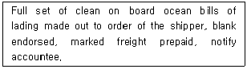
- 해상운임은 선불이다.
- 화물에 대한 하자사항이 기재되지 않은 무고 장부 선하증권이다.
- 선하증권의 consignee란에 “to order of the shipper”라고 기재한다.
- 선하증권을 유통할 때 배서인의 명칭과 서명 없이 유통하도록 한다.
- 화물이 목적지에 도착한 후 운송인이 accountee에게 화물도착을 알린다.
(정답률: 알수없음)
98. 미국이 항공운송 사고시 운송인의 책임한도액이 너무 적다는 이유로 바르샤바 조약을 탈퇴하였다. 이에 따라 IATA가 미국정부와 직접교섭은 하지 않고 미국을 출발, 도착, 경유하는 항공회사들간의 회의에서 운송인의 책임한도액을 인상하기로 합의한 협정은?
- Montreal Agreement
- Guadalajara Convention
- Hague Protocol
- Guatemala Agreement
- Warsaw Convention
(정답률: 16%)
99. 다음은 실제 정박기간이 4일이고 US$ 2,000의 조출료가 발생한 항해용선계약이다. ( ㄱ ), ( ㄴ )에 해당하는 내용은?
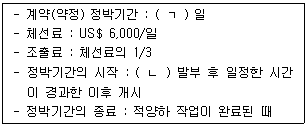
- ㄱ : 3일, ㄴ : N/R(Notice of Readiness)
- ㄱ : 3일, ㄴ : M/R(Mate's Receipt)
- ㄱ : 5일, ㄴ : N/R(Notice of Readiness)
- ㄱ : 5일, ㄴ : M/R(Mate's Receipt)
- ㄱ : 6일, ㄴ : M/R(Mate's Receipt)
(정답률: 15%)
100. 무역상품의 해상운송 관련업무 가운데 일반적으로 선사가 수행하는 업무가 아닌 것은?
- D/O 발급
- M/F 제출
- S/O 발급
- B/L 발급
- S/R 제출
(정답률: 20%)
101. 컨테이너를 이용한 수출화물의 해상운송 절차를 순서대로 올바르게 나열한 것은?
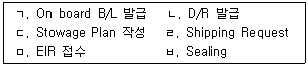
- ㄹ-ㅁ-ㅂ-ㄴ-ㄷ-ㄱ
- ㄹ-ㅂ-ㄷ-ㄴ-ㅁ-ㄱ
- ㄱ-ㅁ-ㅂ-ㄷ-ㄴ-ㄹ
- ㅂ-ㄹ-ㅁ-ㄷ-ㄴ-ㄱ
- ㄷ-ㄹ-ㅂ-ㅁ-ㄱ-ㄴ
(정답률: 30%)
102. 컨테이너 터미널의 주요시설 중 컨테이너 터미널(선사)과 외부(화주, 내륙수송업자)와의 책임관계를 구분하는 지점은?
- Marshalling Yard
- Container Yard
- Container Freight Station
- Apron
- Gate
(정답률: 알수없음)
103. A회사는 수입한 원자재와 국내에서 조달된 원자재를 사용하여 석유화학제품을 생산한 다음 일부는 수출하고 일부는 내수로 판매하는 회사이다. 물류비용을 절감하기 위하여 A회사는 빈번히 수입되는 원자재를 통관이 될 때까지 외국물품 상태로 자사의 공장내에 보관해 둘 수 있기를 원한다. 이 문제를 해결하기 위해 A회사가 세관장의 특허를 받아 운영할 수 있는 것은?
- 경제자유구역
- 자유무역지역
- 지정장치장
- 보세창고
- 세관검사장
(정답률: 알수없음)
104. 운송서류의 정당한 수화인에 관한 설명으로 옳지 않은 것은?
- 지시식 선하증권 중 “to order”로 발행된 경우 신용장 매입은행이 배서한 선하증권 원본 소지인
- 기명식 선하증권으로 발행된 경우 consignee 란에 기재되어 있는 자
- 지시식 선하증권 중 “to order of shipper”로 발행된 경우 shipper가 배서한 선하증권 원본 소지인
- 지시식 선하증권 중 “to the order of D bank” 로 발행된 경우 D은행이 지시한 자
- 지시식 선하증권 중 “to the order of ABC”로 발행된 경우 ABC가 배서한 선하증권 원본 소지인
(정답률: 알수없음)
1⑤. 통관시에 부과되는 관세에 관한 설명으로 옳지 않은 것은?
- 동일한 국가에서 동일한 물품을 반복적으로 수입하여도 관세가 감면되지는 않는다.
- 관세 납부시 환율은 전신환 매입율을 적용한다.
- 관세에는 종량세, 종가세 등이 있다.
- 관세는 수입물품에 부과한다.
- 수입한 수출용 원재료에 대하여 부과된 관세는 수출시에 환급받을 수 있다.
(정답률: 10%)
106. 무역 클레임 해결 방법 중 제3자를 통한 해결 방법이 아닌 것은?
- Arbitration
- Mediation
- Conciliation
- Litigation
- Compromise
(정답률: 알수없음)
107. 다음은 해상보험 계약이다. 이에 관한 설명으로 옳은 것은?
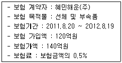
- 보험료는 6천만원이다.
- 보험자의 최고 보상 한도액은 140억원이다.
- 보험 목적물의 가치는 120억원이다.
- 전부보험이다.
- 적하보험이다.
(정답률: 40%)
108. 보험자가 피보험자에게 보험금을 지급한 경우 피보험자가 멸실 또는 손상된 피보험목적물에 대하여 갖고 있던 소유권과 구상청구권을 행사할 수 있는 권리를 승계받게 되는 것은?
- Waiver
- Subrogation
- Abandonment
- Lien
- Settlement
(정답률: 알수없음)
109. 용선계약에 관한 설명으로 옳지 않은 것은?
- Dead Freight는 용선자가 실적재량을 계약물량 만큼 채우지 못할 경우 그 부족분에 대하여 지급하는 운임으로 부적운임이라고도 한다.
- Bare Boat Charter는 일종의 선박 임대차계약으로 용선자가 선원의 승선수배와 선체보험료, 항만비용, 항해비용, 수선비 등의 비용을 부담한다.
- Voyage Charter에는 선적항과 양륙항을 표시하고, Time Charter에는 표시하지 않는다.
- Time Charter에서 선주는 주로 화물운송에 관련된 연료비, 화물 관련 제비용, 하역비용, 입출항 항비 등을 부담한다.
- Time Charter에서 Off-hire 조항은 용선기간 중 용선자의 귀책사유가 아닌 특정사유가 발생하여 본선의 이용이 방해될 때 용선자의 용선료 지급의무를 중단하는 조항이다.
(정답률: 0%)
110. 다음 ( )안에 들어갈 용어는?
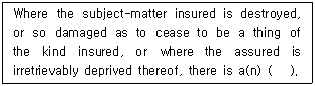
- expense loss
- particular average
- general average
- constructive total loss
- actual total loss
(정답률: 19%)
111. 다음 Incoterms® 2010에서 규정하는 무역거래조건은?
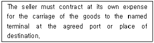
- FOB
- CIF
- DAT
- DDP
- EXW
(정답률: 8%)
112. 서울소재 A회사가 미국 시카고 소재 B회사로부터 물품을 수입(미국 시카고 소재 B회사 발송 → 뉴욕항 선적 → 부산항 입항 → 서울도착)하면서 지불한 운임 및 부대비의 세부 내용은 다음과 같다. 이 때 관세납부시 과세 대상금액은?
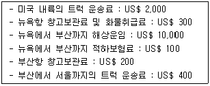
- US$ 10,000
- US$ 12,000
- US$ 12,400
- US$ 12,600
- US$ 13,000
(정답률: 알수없음)
113. 우리나라 수출입물류의 효율화를 위하여 구축된 정보시스템이 아닌 것은?
- K-CALS
- KT-NET
- KL-NET
- SP-IDC
- Port-MIS
(정답률: 알수없음)
114. 다음의 운임요율표에 따라 화물의 규격이 가로 90cm, 세로 40cm, 높이 80cm, 화물의 중량이 40kg인 화물을 항공으로 한국에서 미국으로 보내고자 할 때 지불해야 하는 운임은?
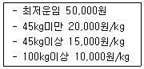
- 50,000원
- 100,000원
- 480,000원
- 720,000원
- 960,000원
(정답률: 알수없음)
115. A회사는 신발 100상자를 LCL 화물로 미국 LA까지 해상운송으로 수출할 예정이다. 다음과 같은 조건일 때 화물의 운임은?
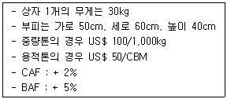
- US$ 300
- US$ 321
- US$ 600
- US$ 642
- US$ 963
(정답률: 28%)
116. 신용장에 관한 설명으로 옳지 않은 것은?
- 연지급신용장은 환어음 발행을 요구하지 않는다.
- 인수신용장은 기한부신용장에 해당된다.
- 내국신용장은 국내거래에서 사용되는 신용장이다.
- 회전신용장이란 일정한 기간동안 일정한 금액이 자동적으로 갱신되어 사용할 수 있는 신용장을 말한다.
- 선대신용장은 수입상으로 하여금 일정 금액을 은행으로부터 미리 지급받을 수 있도록 하는 방식의 신용장이다.
(정답률: 0%)
117. 유조선의 선형을 크기에 따라 올바르게 나열한 것은?
- VLCC ＞ Suezmax ＞ Aframax ＞ Handy
- Suezmax ＞ VLCC ＞ Aframax ＞ Handy
- Suezmax ＞ Aframax ＞ VLCC ＞ Handy
- Aframax ＞ Suezmax ＞ VLCC ＞ Handy
- VLCC ＞ Aframax ＞ Suezmax ＞ Handy
(정답률: 알수없음)
118. 항공화물 운임에 관한 설명으로 옳지 않은 것은?
- CCR은 GCR과 비교하여 크거나 작거나 간에 GCR보다 우선하여 적용된다.
- GCR은 특정구간의 특정품목에 대하여 적용되는 요율로 일반화물요율에 대한 할증과 할인의 형태로 이루어진다.
- SCR은 특정구간에 동일품목이 계속적으로 반복하여 운송되는 품목이거나 육상이나 해상운송과의 경쟁성을 감안하여 항공운송을 이용할 가능성이 많은 품목에 대하여 적용하기 위하여 설정된 할인요율이다.
- BUC는 항공사가 송화인 또는 대리점에 컨테이너나 파렛트 단위로 판매시 적용되는 요금이다.
- Valuation Charge는 운송되는 화물의 가격에 따라 부과되는 운임으로 항공화물운송장상의 “declared value for carriage”란에 신고가격을 기재하게 된다.
(정답률: 19%)
119. 화주가 프레이트 포워더에게 화물의 멸실ㆍ훼손에 관한 클레임을 청구할 때 제출하는 서류가 아닌 것은?
- Claim Letter
- B/L Copy
- Cargo Insurance Policy
- Commercial Invoice
- Survey Report
(정답률: 알수없음)
120. Incoterms® 2010에서 운송방식에 관계없이 사용 가능한 무역거래조건으로 옳은 것을 모두 고른 것은?
- FOB, FCA, CIP, DAT
- EXW, FCA, CFR, DAP
- FAS, FCA, CPT, DAT
- EXW, FCA, CIP, DAP
- EXW, FOB, CIF, DDP
(정답률: 17%)
- "ㄱ"은 반품(returns)을 나타냅니다.
- "ㄹ"은 재활용(recycling)을 나타냅니다.
- "ㅁ"은 수리(repair)를 나타냅니다.
따라서, 이 세 가지 과정이 모두 역물류에 해당합니다.